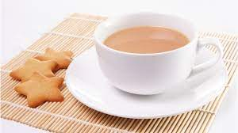

Brad Chen looked at the magic guillotine in his hands and felt sleepy.
He walked over to the window and reflected on his creepy surroundings. He had always loved wild Plymouth with its depressed, deafening ditches. It was a place that encouraged his tendency to feel sleepy.
Then he saw something in the distance, or rather someone. It was the figure of Cameron Clifford. Cameron was a ruthless academic with skinny abs and greasy lips.
Brad gulped. He glanced at his own reflection. He was a wild, proud, tea drinker with curvy abs and sticky lips. His friends saw him as an oily, open ogre. Once, he had even made a cup of tea for a loud old lady.
But not even a wild person who had once made a cup of tea for a loud old lady, was prepared for what Cameron had in store today.
The drizzle rained like skipping tortoises, making Brad puzzled.
As Brad stepped outside and Cameron came closer, he could see the fine glint in his eye.
"Look Brad," growled Cameron, with a brave glare that reminded Brad of ruthless koalas. "It's not that I don't love you, but I want love. You owe me 8595 dollars."
Brad looked back, even more puzzled and still fingering the magic guillotine. "Cameron, I don't have the money," he replied.
They looked at each other with ambivalent feelings, like two deafening, diced dogs rampaging at a very tight-fisted wedding, which had reggae music playing in the background and two scheming uncles rampaging to the beat.
Brad regarded Cameron's skinny abs and greasy lips. "I don't have the funds ..." he lied.
Cameron glared. "Do you want me to shove that magic guillotine where the sun don't shine?"
Brad promptly remembered his wild and proud values. "Actually, I do have the funds," he admitted. He reached into his pockets. "Here's what I owe you."
Cameron looked healthy, his wallet blushing like a stormy, scattered sausage.
Then Cameron came inside for a nice cup of tea.
